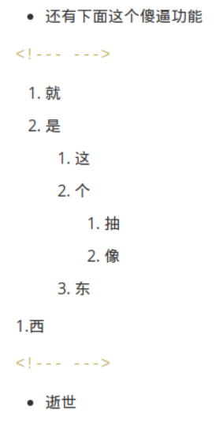

markdown 额外内容（仅记录，想学自学）
各种颜色，可/不可折叠，不同图标的框
没啥可看的
你瞅啥
呃呃呃
别看了哥
111
反正这里面能嵌套
任务列表
- 完成
-
未完成
- 未完成里的完成
-
可以点击切换状态好评
-
没看懂下面这玩意干啥用的
- 反正挺抽象的
- 就是上面这行和现在这行
- 还有下面这个傻逼功能
-
就
-
是
-
这
-
个
-
抽
-
像
-
-
东
-
-
西
- 逝世
要多加行注释

工具提示
表情图标
-

-
-
- 很好的插件使我迪克旋转

- 原文链接
格式
-
标记
-
下划线
-
删除
长长长长长长长长长长长长长长长长长长长长长长长长长长长长长长长长长长长长长长长长长长长长长长长长长长长长长长长长标记
- 绿色下划线
红色删除代换- 神奇的注释
- CO2
-
Alt+F4
注释
注释？
没看出来 (1) 这玩意有啥卵用
- 注释
我的评价是不如tooltips
按钮
表格
| 类型 | 说明 |
|---|---|
| total | 物理内存量 |
| free | 可用内存量 |
| buff/cache | 缓冲区缓存与页面缓存站用的内存 |
| available | 实际可用内存量 |